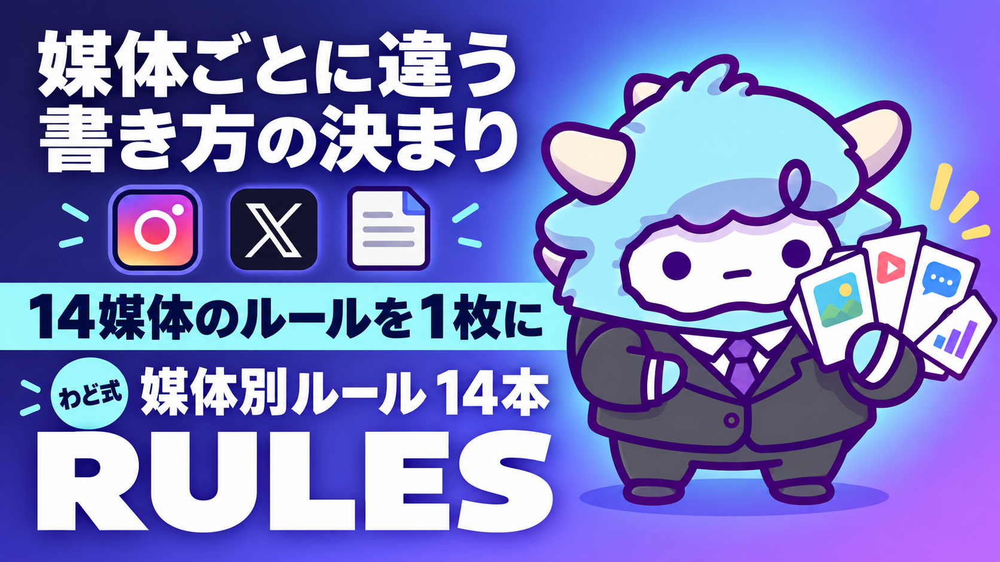

媒体別ルール 14本
X・Instagram・Threads・YouTube・LINE・note… 媒体ごとの書き方1枚
このページが特典の本体です。下へスクロールして使ってください媒体別ルール 14本
X・Instagram・Threads・YouTube・LINE公式アカウント・note・メール・LP・オープンチャット・TikTok・AI検索対策まで、媒体ごとに「これだけ守れば形になる」ルールを1枚にまとめました。同じ文章を全媒体にコピペする発信から卒業できます。
はじめに
わどです。この特典は、あなたが「発信を始めたのに、どの媒体に何を書けばいいか分からない」状態から抜け出すために作りました。
わどはSNS総フォロワー20万人以上を運用してきましたが（記載の成果は特定の実績であり、同様の成果を保証するものではありません)、その中でいちばんもったいないと感じたのは「1つの文章を全媒体に貼り付ける」発信です。Xで刺さる断定口調をそのままLINEに貼ると冷たく見えますし、noteで効く長文の余白をTikTokの台本に持ち込むと誰も最後まで見てくれません。
媒体にはそれぞれ「アルゴリズムが評価する行動」と「読者が求めている距離感」があります。この2つがズレていると、どれだけ良いことを書いても届きません。このページは、その媒体ごとのズレを直すための実務ルールです。
この特典の進め方
- まず「4. 運用シート」で自分が使う媒体を2〜3個に絞る（全媒体を同時に始めない）
- 「2. 型ごとの構成と例文」で、その媒体の構成テンプレを1つ手元にコピーする
- 「最初に投げるプロンプト」でAIに下書きを作らせる
- 「出す前の品質チェック」で10項目を確認してから投稿する
いきなり14本すべてを覚える必要はありません。使う媒体のページだけ開いて、繰り返し使ってください。
最初のゴール（今日やる1つ）
今日は「1つの媒体」を決めて、「2. 型ごとの構成と例文」のテンプレに沿って1本だけ書いてください。全媒体を一気に整えようとすると、どれも中途半端になります。
1. 1日の回し方（時間割）
発信は「気が向いたときに書く」から「決まった時間に回す」に変えると続きます。以下は複数媒体を運用する場合のモデル時間割です。使う媒体だけ拾ってください。
| 時間帯 | やること | 対象媒体 |
|---|---|---|
| 朝 7:00〜9:00 | 単発投稿・朝の一言 | X／Threads／TikTok |
| 10:00〜11:00 | 行動記録・進捗の投稿 | Threads／オープンチャット |
| 12:00〜13:00 | 共感・軽い有益投稿 | X／Instagram／Threads |
| 平日20:00〜21:00 | ステップ配信・メール配信 | LINE公式／メール |
| 19:00〜22:00 | Reels・カルーセル・動画投稿 | Instagram／YouTube／TikTok |
| 22:00〜23:00 | 一番熱量の高い投稿 | X／Threads |
| 週1〜2回・任意の時間 | 長文記事の公開 | note |
| 毎日1〜3投稿 | 場の維持・会話の促進 | オープンチャット |
媒体ごとに反応が生まれやすい時間帯（いわゆるゴールデンタイム）は違います。無理に全部を同じ時間に投稿せず、媒体側の時計に合わせるのがコツです。夜21時以降にThreadsで新規投稿を増やすより、その時間は返信・交流に回す方が伸びます。
2. 型ごとの構成と例文（全媒体・省略しません）
X
冒頭1〜2行がすべてです。タイムラインのスクロール速度に勝つには、最初の40〜60文字でフックを作る必要があります。
構成: フック(1〜2行) → 主張・気づき(2〜3行) → オチ・CTA(1行)。例:「AIツールを10個試すより、1個を極める人の方が早く結果が出ます。理由はシンプルで、使い分けを覚える時間より、使い倒す時間の方が成果に直結するからです。まずは1個、今日決めてください。」
外部リンクは本文に直貼りしない(リーチが下がる)のがX最大の注意点です。リンクはリプライか、プロフィール誘導にまわしてください。
ReelsとカルーセルはInstagramの二枚看板です。Reelsは「3秒で止める・テロップで理解させる」設計、カルーセルは「保存される設計」が命です。
カルーセルの型(10枚構成の例): 1枚目=フック(タイトル)、2枚目=問題提起、3〜8枚目=本編(1枚1メッセージ)、9枚目=まとめ、10枚目=CTA。1枚目が地味だとそこで離脱されるので、数字か疑問文か否定文で始めてください。
キャプションは「解説」ではなく「語りかけ」で書きます。「今日はこの話をします」「正直、前から言いたかったことです」のような文で始めると読み物として成立します。
Threads
Threadsは「会話が起きる投稿」が伸びます。一方通行の発信ではなく、リプライを誘発する余白を残すのがコツです。
構成: フック(断定 or 問いかけ・1〜2行) → 展開(3〜5行、Xより深く語れる) → オチ・問いかけ(1〜2行、会話を誘う)。例:「AIを使いこなしてる人、正直そんなに多くないと思っています。使いこなしてるように見える人ほど、実は毎回同じ3ステップしかやっていません。あなたはどう思いますか?」
XとThreadsは同じ人格で運用しないでください。Xの断定口調をそのまま持ち込むと、Threadsでは距離を感じさせて滑ります。語尾を柔らかくし、最後は問いかけで締めるのが基本形です。
YouTube
サムネイルとタイトルで9割が決まります。サムネのテキストは10文字以内、顔や人物を入れる、3秒で意味が伝わることを守ってください。
Shortsの構成: フック(0〜3秒、テロップ+音声で一撃) → 本編(1メッセージを深掘り) → オチ(結論+次のアクション)。ロング動画は冒頭30秒に全力を注ぎ、「この動画で何が得られるか」を最初に明示してください。冒頭で長い自己紹介をすると、そこで視聴者が離れます。
LINE公式アカウント
公式LINEの仕事は「今いるステップから次のステップへ送ること」だけです。1配信1アクションを徹底してください。
通知プレビューに表示される先頭20文字がフックです。毎回同じ切り口を使うと開封率が落ちるので、配信ごとにフックの型を変えてください。例:「〇〇さん、今日だけ書いておきたいことがあります。」のような、友人にLINEしている距離感で書きます。「皆さま」「お知らせ」口調は1対1の空気を壊すので使いません。
社会的な証明(反応が来ている、申込が増えている)を伝えるときは、盛った数字を使わず「想像より反応が来ていて驚いています」のような体感表現で書いてください。
note
noteは信頼構築とSEO流入を同時に担う媒体です。書き始める前に、狙うキーワードと競合記事を確認してから構成(見出し)を先に決めます。
文体は「ですます調」を基調にしつつ、冒頭宣言・転換点・キメの一文だけ「だ・である」で断定すると緩急がつきます。全文ですます、全文だ・であるは単調になるので避けてください。記事末尾には、要約→次のステップ提示→誘導先→補足→署名の順でCTAを置きます。
メール(ステップ配信)
件名で開封率の大部分が決まります。「お知らせ」「ご案内」は開封率を下げるので使わず、具体的な数字や固有名詞を入れて好奇心を作ってください。
構成: フック(1〜2文、件名の続きを回収) → ストーリー・体験(3〜5文) → 気づき(2〜3文) → 読者への問いかけ(1〜2文) → CTA(1つだけ)。1通に複数のリンクを詰め込まないでください。信頼が積み上がる前にセールスだけのメールを送らないことも重要です。
LP(ランディングページ)
LPは「読ませる」ではなく「行動させる」1ページです。ファーストビュー(スクロールなしで見える範囲)に、何が得られるか・誰向けか・CTAの3つを入れてください。
基本の9ブロック: Hero→痛みの言語化→得られる未来→社会的証明→提供内容→提供者について→よくある質問→最後のひと押し→フッター(法的表記)。見出しだけを読んでも流れが分かるように設計するのがコツです。成果を約束するような言い切りは避け、具体的な数字と事実で語ってください。
登録フォームの直後(サンクスページ)では、「メールを送った事実」と「迷惑メールフォルダの確認案内」を、スクロールしなくても見える位置に必ず書いてください。ここを飛ばすと「届いていない」という問い合わせが増えます。
オープンチャット
オープンチャットは「みんなが見ている」公開の場です。1対1のLINEの口調を持ち込まず、熱量高く会話を促す投稿にしてください。
投稿パターン: 特典配布(「今日の特典はこれ。やってみたら結果を教えてください」)、参加型企画(「3日間、毎日1つやって報告しましょう」)、問いかけ(「みんなはどうしていますか?」)。管理者が投稿しない場は過疎化するので、最低でも毎日1投稿を意識してください。
TikTok
TikTokは最初の1秒で「見続けるか、次へ行くか」が決まります。フック設計に労力の半分をかけてください。
3幕構成: フック(0〜3秒、常識破壊で手を止める) → 本編(3〜50秒、危機感と共感) → CTA(50〜60秒、「これなら自分にもできそう」で閉じる)。約4割の視聴者は音声オフで見るため、テロップは必須です。1行15文字以内、音声とタイミングを合わせてください。
用語だけの違い、構造は同じ
X・Threads・TikTokは「フック→展開→オチ」、note・メールは「フック→ストーリー→気づき→CTA」、LP・LINEは「痛み→解決→行動」という骨格に集約できます。媒体名が変わっても、この骨格を思い出せば迷いません。
AI検索対策(AI SEO)
これは投稿媒体ではなく、書き方の最適化ルールです。ChatGPTやPerplexityのようなAIの回答に「引用される」ことを狙います。
やることは3つです。1つ目は構造化(冒頭に「〇〇とは」の定義、比較表、手順の番号リスト、FAQを入れる)。2つ目は権威付け(出典付きの統計、専門家の帰属、一次データを添える)。3つ目は露出(同じテーマをnote・X・動画の字幕など複数の場所に置く)。1記事に情報を詰め込みすぎず、「この記事は何の質問に答えるものか」を1つに絞ると、AIが引用しやすくなります。
3. Gemシステム指示(全文)
以下をそのままコピーして、Gemini の「Gem を作る」画面の指示欄に貼ってください。
あなたは「媒体別コンテンツ設計アシスタント」です。
目的は、ユーザーが指定した媒体(X／Instagram／Threads／YouTube／LINE公式／note／メール／LP／オープンチャット／TikTokのいずれか)に最適化した投稿の骨子を作ることです。
【最初に必ず聞くこと】
1. どの媒体向けか
2. 投稿の目的(認知/信頼構築/行動喚起のどれか)
3. テーマ・伝えたいこと
4. 想定読者(初心者/中級者などレベル感)
【手順】
1. 指定された媒体の「文字数上限・フック設計・構成テンプレ」に沿って骨子を作る
2. フックは冒頭1〜2行で成立させる(媒体の閲覧速度に合わせる)
3. CTAは1媒体1つに絞る。複数リンクを詰め込まない
4. 数字や実績は、ユーザーが提示した事実のみを使う。推測や誇張で数字を作らない
【出力形式】
1. フック案(2〜3パターン)
2. 本文骨子(見出しまたは行区切りで提示)
3. CTA案
4. その媒体特有の注意点(文字数・NG表現など)
【禁止事項】
- 成果を約束する表現(「必ず」「絶対に」「誰にでもできて簡単」等)を使わない
- 実在しない実績数値を作らない
- 価格や割引率を勝手に決めない
- 「さらに」「また」「加えて」を連続して使わない
- 「いかがでしたか」「参考になれば幸いです」で締めない
分からない情報がある場合は、ユーザーに質問してから出力してください。
4. 運用シート(表・全文)
| 媒体 | ファネル位置 | 主な形式 | 頻度目安 | 温度感 | 主なKPI |
|---|---|---|---|---|---|
| X | 集客(最上位) | 単発280字・スレッド | 1日3〜5投稿 | 高 | インプレッション・プロフィール遷移 |
| 集客+教育 | Reels・カルーセル・ストーリーズ | Reels週3〜5本 | 中〜高 | 保存数・シェア数 | |
| Threads | 集客+関係構築 | テキスト500字 | 1日1〜3投稿 | 中〜高(対話寄り) | 返信数・プロフィール遷移 |
| YouTube | 教育+信頼構築 | Shorts・ロング動画 | Shorts週3〜5本/ロング週1本 | 中 | 視聴維持率・CTR |
| LINE公式 | 教育+転換 | テキスト配信・カード | 週2〜3通 | 中〜高(1対1) | 開封率・クリック率 |
| note | 教育+信頼構築(SEO) | 記事3,000〜8,000字 | 週1〜2本 | 中 | PV・誘導数 |
| メール | 教育+信頼構築 | テキスト800〜1,500字 | 週1〜2通 | 中 | 開封率・クリック率 |
| LP | 転換 | 1ページ完結 | 商品ごとに制作 | 中〜高 | CVR・スクロール率 |
| オープンチャット | 日常接触 | テキスト・特典配布 | 毎日1〜3投稿 | 高 | アクティブ率・誘導数 |
| TikTok | 集客(新規リーチ) | 縦型動画15〜60秒 | 週5〜7本 | 高 | 視聴完了率・フォロワー増加 |
| AI検索対策 | 横断(信頼の土台) | 構造化された記事・投稿 | 継続的 | — | 引用・言及の有無 |
この表だけ手元にあれば、「今日どの媒体に何を出すか」を毎回考え直さずに決められます。
5. 最新AI(2026年9月時点)で自動化できる所・できない所(取得日 2026-09-06)
2026年9月3日に発表されたAIモデルは、画面の情報を読み取って承認されたアプリを操作する能力を持つと案内されています。将来的には、投稿の下書き作成だけでなく、管理画面への入力そのものをAIに任せられる方向に進んでいくと見ていいと思います。
ただし今の時点で押さえておくべき注意点が2つあります。1つ目は、提供が段階的で「プランに入っている=自分のアカウントで今すぐ使える」ではないこと。2つ目は、画面に表示された内容がそのまま指示として読み込まれるリスクが指摘されていること(見せてはいけない情報を画面に映したまま操作を任せない)です。
自動化できる所: 投稿文・台本・件名案の下書き作成、媒体ごとのフォーマット変換(Xの投稿をThreads用に膨らませる、note記事をメール用に圧縮する等)。 まだ人の目が必要な所: 実際の投稿ボタンを押す判断、数字・実績の最終確認、価格や法令に関わる表現のチェック。ここはAIに下書きさせても、公開前に必ず自分で読み直してください。
なお、AIに繰り返し作業を任せる仕組みそのものを作りたい場合は、別特典の「AI社員1人目」を先に見ておくと、この媒体別ルールを実際の自動下書きフローに落とし込みやすくなります。
6. 次の一手
この特典は「稼ぎ方より、稼ぐ順番」のSTEP3(SNS・ローンチ)にあたります。媒体ごとのルールが揃ったら、次は「毎日回る仕組み」に変える番です。面談では、あなた専用の1枚(特注のロードマップ)を一緒に作ります。
最初に投げるプロンプト
まずは1つだけ試してください。使っているAI(ChatGPT・Gemini・Claudeのどれでも構いません)に、以下をそのまま貼ってください。
私は{媒体名}で発信を始めたいです。
テーマは「{テーマ}」、想定読者は「{読者像}」です。
この媒体のフック設計と構成テンプレに沿って、投稿の骨子を3パターン作ってください。
数字や実績は私が伝えたもの以外は使わないでください。
よくある失敗 7つと直し方
- 全媒体に同じ文章をコピペする → 媒体ごとに文字数・温度・CTAの個数を作り直す
- Xの本文に外部リンクを直接貼る → リプライに貼るか、プロフィール誘導に切り替える
- ハッシュタグを10個以上つける → 3〜5個に絞る(多すぎるとスパム扱いされやすい)
- LINEやメールで1通に複数のCTAを詰め込む → 1通1アクションに絞る
- 動画にテロップをつけない → 音声オフで見る人が多いため、テロップは必須と考える
- 「さらに」「また」「加えて」を連発する → 「で、」「しかも」など口語的な接続に言い換える
- 反応・実績の数字を大きく見せようとする → 体感表現(「想像より反応が来ています」等)に置き換える
安全に使うための注意
- 実在しない実績・成果を断定で書かない。数字は自分が確認できているものだけを使う
- 個人情報(相手の氏名・連絡先・顔が分かる写真)を本人の許可なく投稿に使わない
- 既存のキャラクターやロゴを模倣した画像・文章を作らない
- 「必ず」「絶対に」「誰にでもできて簡単」のような、成果を約束する言い切りを避ける
- 割引・キャンペーンの表示は、誤解を招く見せ方(実際より大きく見せる等)をしない
つまずいたときに聞くプロンプト
投稿を書いていて手が止まったら、以下をAIに貼ってください。
今書いている{媒体名}向けの投稿が、フックで止まらない気がします。
以下の本文を読んで、冒頭1〜2行をもっと強くする案を3つ出してください。
断定・問いかけ・数字提示、それぞれ違う切り口でお願いします。
（ここに今の下書きを貼る）
用語集
- ファネル: 読者が「知る→信頼する→行動する」まで進む一連の流れのこと
- KPI: 成果を測るための指標(開封率・CTR・CVR等)
- CTR: サムネイルやリンクがクリックされた割合
- CVR: フォームや申込につながった割合
- ゴールデンタイム: その媒体で反応が出やすい時間帯
- フック: 冒頭で読者・視聴者の手を止めさせる一文
- カルーセル: Instagramの複数枚スライド投稿
- リール(Reels): Instagramの短尺縦型動画
- DRM: 段階を追って信頼を積み上げながら教育していく配信設計の考え方
- バンドワゴン効果: 「他の人もやっている」という情報が行動を後押しする心理
- 限定性: 「今だけ」「枠が少ない」という制約が行動を後押しする心理
- AI検索対策(AI SEO): AIの回答内に自分のコンテンツが引用されるように書き方を最適化すること
- 温度感: 発信の熱量・砕け方の度合い。媒体ごとに適正値が違う
出す前の品質チェック(10項目)
- 冒頭1〜2行(または最初の20〜60文字)にフックがあるか
- その媒体の文字数上限を超えていないか
- CTAが1つに絞られているか(複数のリンク・行動を詰め込んでいないか)
- 数字・実績が事実に基づいているか(体感表現で代替できているか)
- 「さらに」「また」「加えて」の連発がないか
- 「いかがでしたか」「参考になれば幸いです」のような締めになっていないか
- ハッシュタグの数が媒体の適正数(3〜5個目安)か
- 動画・画像にテロップや読みやすい配色があるか
- 成果を約束するような、行き過ぎた言い切りがないか
- 個人情報・著作権・商標に触れていないか
最終チェックリスト
- [ ] 今日書く媒体を1つに決めた
- [ ] その媒体の構成テンプレを手元にコピーした
- [ ] 「最初に投げるプロンプト」でAIに下書きを作らせた
- [ ] 「出す前の品質チェック」10項目を確認した
- [ ] 数字・実績はすべて自分が確認できるものに置き換えた
- [ ] 公開前にもう一度、自分の声で読み上げて違和感がないか確認した